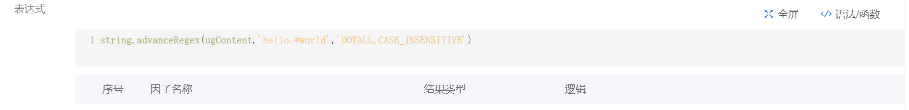
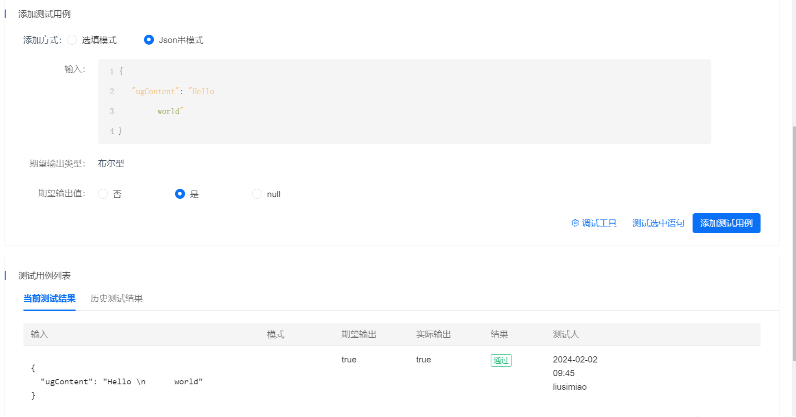

说明：Zeus已支持扩展函数列表
Zeus函数梳理 -对部分函数进行了使用方式梳理，包含内置函数
- 阅读本文前请确保了解Aviator表达式引擎相关知识，Aviator内置函数请参考Aviator表达式简介-内置函数，下表是自定义的扩展函数
- 合法的json字符串中不应包含\n \t \r 等非打印字符，否则json解析失败，将导致Aviator表达式执行出现异常
|
函数 |
说明 |
示例 |
|
|---|---|---|---|
|
string.toLowerCase(String key) |
字符串转换成小写 |
|
|
|
string.toUpperCase(String key) |
字符串转换成大写 |
|
|
|
double(String key) |
字符串转换成整型 |
String key 数据格式由字符串转换为整型 |
|
|
existKey(String key) |
判断当前上下文中是否存在该字段key |
existKey(dm)== false，表示无dm参数 |
|
|
isMobileNumber(String key) |
是否是手机号t |
|
|
|
|
|
|
|
|
string.splitAndGetSlice(String key, String regex, Integer index) |
string split分隔后，返回第index+1个元素, index从0开始, regx支持正则表达式 |
string.splitAndGetSlice('adfdff|df|fdsfs|sss', '|', 2) 结果为fdsfs。 string.splitAndGetSlice('a},{b', '},{', 0) 结果为a。注意要转义特殊字符。 参考因子48486 |
|
|
string.hasInstalledApp(String base64AppString, int index) |
applist里是否安装某个app，index从1开始 |
|
|
|
string.splitAndContainStr(String key, String regex, String str) |
对key 以regex分隔，查看分隔后的list是否包含str |
||
|
jsonString.toListAndGetOne(String key, int index) |
对json转成list，并取出第index+1个元素index从0开始 |
||
|
from_unixtime(long timestamp) from_unixtime(long timestamp， String parttern) |
将long型unix timestamp转为String型。 parttern可选："yyyy-MM-dd HH:mm:ss"或者"yyy/MM/dd "等，字母大小写严格区分的。y-年，M-月，d-日期，H-小时，m-分，s-秒。 |
from_unixtime(1219428234L); 结果为“2008-08-23 02:03:54”。 from_unixtime(1219428234L,"yyyy-MM-dd");结果为“2008-08-23”。 |
|
|
unix_timestamp(String time) |
将String型日期转为long型unix timestamp。 |
unix_timestamp('2008-08-23 02:03:54');结果为1219428234。 unix_timestamp('2008-08-23');结果为1219420800。
|
|
|
md5(String plainText) |
生成字符串painText的md5哈希摘要 |
md5('abcdefgh') |
|
|
string.equalsIgnoreCase(String originalStr, comparedStr) |
比较originalStr与comparedStr在不区分大小写的情况下的相等性 |
string.equalsIgnoreCase('abc', 'AbC') ，返回为true |
|
|
string.getMatchPatternGroups(String input, String regExp, String groups) |
获取正则匹配成功的捕获组的拼接后的内容。 input为要匹配的源字符串，regExp为正则表达式，groups 为以英文逗号相间隔的多个捕获组
|
getMatchPatternGroups(storage, '(\d+)(\d)(@\d+)', '1,3') 注意：仅支持头次匹配，例如:storage="1234@567.com1234@567.com"，则返回结果依然为"123@567" |
|
|
isValidImei(String key) |
key是否是合法的Imei |
isValidImei('490154203237518') 将返回true |
|
|
string.getCharTypeChangeNumber(String key) |
字符串中字符变化的次数 |
字符类型分为5种：中文、数字、大写字母、小写字母、其他。 string.getCharTypeChangeNumber('')=0 string.getCharTypeChangeNumber('a')=1 string.getCharTypeChangeNumber('aBa')=3 string.getCharTypeChangeNumber('aBBa')=3
|
|
|
gpsDistance(lat1, lng1, lat2, lng2) |
根据两点的经纬度，计算距离 |
gpsDistance(1.0, 1.0, 2.0, 2.0)=157402.0 |
|
|
array.contains(String array, String key) |
字符串型的数组array是否包含字符串key |
字符串型的数组支持两种格式：以英文中括号包围或不以中括号包围。中间以英文逗号相间隔 array.contains('[1, 2, 3]', '1') 返回true array.contains('1, 2, 3', '1') 也返回true 注意：array.contains('["1","2"]','1') 返回 false |
|
|
map.containsIntegerValue(String jsonMap, Integer value) |
jsonMap作为json格式的Map是否包含以整型的value为值的情况 |
map.containsIntegerValue('{"key1" : 1, "key2" : 2}', 1)返回true map.containsIntegerValue('{"key1" : 1, "key2" : 2}', 3)返回false |
|
|
math.round(double num) |
近似 |
math.round(1.4999)返回1 math.round(1.8999)返回2 |
|
|
string.countSubString(String originalStr, String substr) |
返回originalStr中包含子字符串substr的次数 |
string.countSubString('ababcdefab', 'ab')返回3 |
|
|
parseTimeToDay(String time) |
将字符串型的time转化成'yyyy-MM-dd'（如：2016-08-25）格式的日期字符串 |
time的格式可以为以下几种（位代表字符）：
|
|
|
string.getFromJsonMap(String jsonMap, 'String key') |
从json字符串格式的map中取出指定的key对应的value |
string.getFromJsonMap('{"key1":"value1", "key2":"value2"}', 'key1') 返回"value1" 注: 此方法默认返回的是String类型,因此,如果value为整形或浮点型,就使用long()或double()函数进行强制类型转换,还需注意的是,返回值强转成double型后可能有精度误差 string.getFromJsonMap(extraContext, 'applyid') { "extraContext": "{\"couponUserType\":1,\"applyid\":\"746601693\",\"mtCampaignType\":1,\"couponAmountType\":2,\"couponType\":1,\"activityName\":\"美食神券\"}" } 执行结果：746601693 |
|
|
string.getJsonStringFromJsonMap(String jsonMap, String key) |
从json字符串格式的map中取出指定的key对应的value, 并将value处理成JsonString |
string.getJsonStringFromJsonMap('{"key1":{\"innerKey\":\"innerValue\"}, "key2":"value2"}', 'key1') 返回"{\"innerKey\":\"innerValue\"}" 多层时，内层用这个 |
|
|
string.substringIndex(String str, String separator, int index) |
返回字符串str中在第index个出现的分隔符separator之前的子串。如果index是一个正数，返回从最后的(从左边开始计数)分隔符到左边所有字符。如果index是负数，返回从最后的(从右边开始计数)分隔符到右边所有字符。 类似于mysql中的substring_index库函数 |
|
|
|
getFirstNonNull(String arg1, String arg2, String arg3 ...) |
返回第一个不为null的参数的值，入参理论上不限个数 |
getFirstNonNull(arg1, arg2, arg3)，如果arg1=null，arg2="arg2Value"，arg3=null，则返回为"arg2Value"（按照顺序，第一个不为null的是arg2，因此返回的是arg2的值"arg2Value"） |
|
|
getLongTimestamp(String formattedTime) |
返回字符串型时间格式的formattedTime的长整型时间戮（自1970 年1 月1 日（00:00:00 GMT）以来的秒数），单位是秒 |
formattedTime的格式可以为以下几种（位代表字符）：
|
|
|
string.combineToList(String combiningStr, String combinedList) |
将字符串combiningStr以前缀的方式添加到combineList列表的每个元素中，combineList为以英文逗号间隔的字符串 |
string.combineToList('2', '1,2,3,4') 返回的结果为:"2_1,2_2,2_3,2_4", 默认是以"_"进行拼接 |
|
|
string.mergeList(String delimiter, String list1, String list2 ...) |
将字符串用指定的分隔符进行合并并且去重 |
string.mergeList(',', 'a', 'b,c', 'd,e,f', 'a') 表示用英文逗号对"a", "b,c"和"d,e,f"以及"a"进行合并并去重, 返回的结果为: "a,b,c,d,e,f" |
|
|
string.charAt(String arg, int index) |
返回指定索引位置的字符串值，索引范围[0, length()-1] |
string.charAt('1234', 0) 返回'1' string.charAt('1234', 2) 返回'3' string.charAt('1234', -1)返回nil string.charAt('1234', 5) 返回nil string.charAt('', 2) 返回 nil string.charAt(nil, 2) 返回 nil |
|
|
string.compareTo(String s1, String s2) |
按照字典序比较两个字符串大小 |
string.compareTo('2015-12-12', '2015-12-12') 返回0 string.compareTo('2015-12-12', '2015-12-13') 返回 小于0的数值 string.compareTo('2015-12-12', '3') 返回小于0的数值 string.compareTo('2015-12-12', '') 返回大于0的数值 string.compareTo('2015-12-12', nil) 程序执行异常 |
|
|
string.splitAndMatchesCount(String key, String separator, String regex) |
用separator分隔key， 一般会得到一个数组，然后计算数组元素与regex正则匹配的元素个数 |
string.splitAndMatchesCount('123455-aaaa-bbb123', '-', '\\d+') 返回1 string.splitAndMatchesCount('123455-aaaa-bbb123', null, '\\d+') 返回nil string.splitAndMatchesCount('123455-aaaa-bbb123', '', '\\d+') 返回nil string.splitAndMatchesCount('123455-aaaa-bbb123', '-', '^[a-z].*') 返回2 |
|
|
math.max(double arg1, double arg2, .....) |
返回所有参数中值最大的那个，返回值类型为double（最多支持10个输入参数） |
math.max(1) 返回 1.0 math.max(1.0, 3) 返回 3.0 math.max(1.0, 3, 2, -4) 返回3.0 |
|
|
math.min(double arg1, double arg2, .....) |
返回所有参数中值最小的那个，返回值类型为double（最多支持10个输入参数） |
math.min(1) 返回 1.0 math.min(1.0, 3) 返回 1.0 math.min(1.0, 3, 2, -4) 返回-4.0 |
|
|
jsonString.toListAndIndexesOf(String originalStr, String regx) |
返回jsonList中指定正则模式regx出现的所有索引位置，索引位置可能是零个，一个或者多个 ，返回值类型是jsonString |
jsonString.toListAndIndexesOf("[1,2,3,4,1,2,3,4]", "2") 返回"[1,5]" jsonString.toListAndIndexesOf("[\"1\",\"2\"]", "\"2\"") 返回"[1]" jsonString.toListAndIndexesOf("[\"1\",\"2\"]", "2") 返回"[]" jsonString.toListAndIndexesOf("[{"bankCardNo":"123"},{"bankCardNo":"234"}]", "^\{.*123.*\}$") 返回"[0]" |
|
|
string.getMatchesPatternMaxLengthStr Function(String input, String regExp) |
获取正则表达式匹配结果中最长字符串 |
string.getMatchesPatternMaxLengthStrFunction(inputStr, regStr) inputStr:待匹配内容 regStr:正则表达式 例子： 输入： inputStr="1234蛋糕店123" regStr="\d+" 输出："1234" |
|
|
currentTime() |
获取当前时间戳，精确到秒 |
||
|
jsonString.toListAndMaxValue(String originalStr, String field) |
该函数返回list中最大值元素，list中元素的数据类型是map，map根据指定字段来比较大小 |
||
|
jsonString.toListAndGetSize(String list) |
返回List中所有元素的个数，包括null元素 |
||
|
jsonString.toListAndGetNotNullSize(String list) |
返回List中所有非null元素个数 |
||
|
jsonString.toListAndCountSpecified(String list, String regx) |
返回List中指定元素个数 |
jsonString.toListAndCountSpecified(list, reg) 例子： 输入：list = "[1,2,1,3]", reg = "1" 输出：2 |
|
|
isListPartlyInclude(String listA, String listB) |
判断listA和listB是否部分包含。部分包含的规则如下：对于集合A和B，如果他们之间存在重叠的元素，那么A和B即为部分包含 |
isListPartlyInclude(listA, listB) 1. 输入: listA = "[1,3,4]", listB = "[1,5,6]" 输出：true |
|
|
isListTypePartlyInclude(List listA, List listB) |
输入：字符串数组，比如["abc"] 判断逻辑：判断输入的listB中的每个字符串是否被listA中的每一个元素所包含 |
isListTypePartlyInclude(List listA, List listB) 1.输入：listA = ["abc"]，listB = ["ab"]，输出true 2.输入：listA = ["abc"]，listB = ["bcd"]，输出false |
|
|
isListCompletelyInclude(String listA, String listB) |
判断listA是否完全包含listB。完全包含的规则如下：对于集合A和B，如果B中的任意元素都在A中出现，则A包含B为true，否则A包含B为false。 |
isListCompletelyInclude(listA, listB) 1.输入：listA = "[1,3,4]", listB = "[1, 1]" 输出：true 2.输入：listA = "[1,3,4]", listB = "[1,2]" 输出：false 3.输入：listA = "[1,3,4]", listB = "[1, null]" 输出：true 4.输入：listA = "[]", listB = "[]" 输出：true |
|
|
compareVersion(String v1, String v2, String style) |
版本号比较函数 返回结果为正数1，表示v1的版本号大于v2，为0表示版本号相同，为负数-1表示v1版本号小于v2 style是版本的样式，例如版本号：9.3.1的style为V.V.V , 24_7.0的style为V_V.V , 60604的style为V0V0V , 631的style为V 其中style必需按照最长样式来，如果无法确定版本号样式长度，则很有可能返回结果不符合预期 因为nil小于任何非nil的对象，因此判断结果小于0时一定要对nil进行判断，如： compareVersion(version, '1.2.3', 'V.V.V') == -1 或者 compareVersion(version, '1.2.3', 'V.V.V') != nil && compareVersion(version, '1.2.3', 'V.V.V') < 0 |
compareVersion('25_7.1.1', '24_7.1', 'V_V.V.V') 结果返回1 compareVersion('24_7.0', '25_7.1', 'V_V.V') 结果返回-1 compareVersion('25_7.1', '25_7.1', 'V_V.V') 结果返回0 |
|
|
string.convertToBigDecimal(originStr) |
将字符串转换为高精度类型(BigDecimal)，高精度类型是什么，参考：http://www.cnblogs.com/chenssy/archive/2012/09/09/2677279.html |
string.convertToBigDecimal(originStr) 1.输入originStr="abc"，输出null 2.输入originStr="1.16"，输出1.16 3.输入originStr="0.312464345"，输出0.312464345 |
|
|
jsonString.toListAndMergeList(String listA, String listB) |
输入两个list，返回这两个list的并集，并且并集顺序与原list顺序一致（即：不需要重新排序） |
jsonString.toListAndMergeList(listA, listB) 1. 输入: listA = "[1,3,4]", listB = "[1,5,6]" 输出："[1,3,4,5,6]" |
|
|
jsonString.toMapAndGetDifferenceMap(String mapA, String listB) |
输入一个map和一个list，删除map中有list中元素的key。 |
jsonString.toMapAndGetDifferenceMap(mapA, listB) 1.输入：mapA = "{"1":1,"2":2,"3":3}", listB = "[1,2]"，输出："{"3":3}" 2.输入：mapA = "{"1":1,"2":2,"3":3}", listB = "[4,5]"，输出："{"1":1,"2":2,"3":3}" 3.输入：mapA = "{"1":1,"2":2,"3":3}", listB = "[1,2]"，输出："{"2":2,"3":3}" |
|
|
jsonString.toMapAndMergeMap(String mapA, String mapB) |
输入两个map，返回这两个map的并集，map中值的情况以第二个map中的值为准。类似于HashMap.putAll语义 |
1.输入：mapA = "{"key1":1}", mapB = "{"key2":100,"key3":150}", 输出："{"key1":1,"key2":100,"key3":150}" 2.输入：mapA = "{"key1":1}", mapB = "{"key1": 1000,"key2":100,"key3":150}", 输出："{"key1":1000,"key2":100,"key3":150}" |
|
|
sha256(String str) |
进行sha256运算 |
入参为""或者null时返回null 其他情况进行sha256运算 例子： 输入：12345678901 输出：254aa248acb47dd654ca3ea53f48c2c26d641d23d7e2e93a1ec56258df7674c4 |
|
|
loop(String methodName, String str1,String str2, ......) |
循环执行某个函数 |
methodName => 需要循环运行的函数名 str1,str2... => 要进行运算的数组，如果数组长度不一样，以最短的为准，如果数组内元素完全相同，可以用一个值替代 返回值= 》数组 示例一： 输入=》loop("jsonString.toListAndGetSize", "[[1,2,3], [2,2,2,2,2], [1,1]]") 返回=》[3,5,2] 示例二： 输入=》loop("math.max", "[1, 78, 18, 92, 36, 64, 83, 10]", "[7, 93, 60, 18, 48, 39, 83, 48]") 返回=》[7.0,93.0,60.0,92.0,48.0,64.0,83.0,48.0] 示例三： 输入=》loop("math.max", "[1, 78, 18, 92, 36, 64, 83, 10]", 50) 输出=》[50.0,78.0,50.0,92.0,50.0,64.0,83.0,50.0] |
|
|
jsonString.toTwoDimenListAndSubList(String array, int startX, int endX, int startY, int endY) |
将json串转换成二维数组，并按照横坐标和纵坐标取出二维数组中的一部分 |
array => json格式的二维数组 startX => 开始的横坐标，从0开始，包含startX endX => 结束的横坐标，从0开始，包含endX startY => 开始的纵坐标，从0开始，包含startY endY => 结束的纵坐标，从0开始，包含endY 返回值：一个二维数组，如果截取的是一行或者一列，则返回一维数组 示例一： 输入=》jsonString.toTwoDimenListAndSubList(“ [ ["a", "b", "c", "d", "e"], ["1", "2", "3", "4", "5"], ["A", "B", "C", "D", "E"] ] ”, 1, 4, 1, 2) 输出=》 [ ["2","3","4","5"], ["B","C","D","E"] ] 示例二： 输入=》jsonString.toTwoDimenListAndSubList("[[11,12,13,14,15,16,17], [21,22,23,24,25,26,27], [31,32,33,34,35,36,37], [41,42,43,44,45,46,47], [51,52,53,54,55,56,57]]", 1, 1, 1, 4) 输出=》[22,32,42,52] |
|
|
string.checkNull(String str, String defaultStr) |
当str不为空时，返回str本身，否则返回默认值 |
str——需要校验的参数 defaultStr——默认值 当str或defaultStr不是String类型时，返回"" 当!(str==null || str=="" || str=="null" )时，返回str 当(str==null || str=="" || str=="null" )&& defaultStr == null 时，返回“” 当(str==null || str=="" || str=="null" )&& defaultStr != null 时，返回defaultStr 示例一： 输入=》checkNull("ab", "cd") 输出=》"ab" 示例二： 输入=》checkNull("", "cd") 输出=》"cd" 示例三： 输入=》checkNull("null", "cd") 输出=》"cd" 示例四： 输入=》checkNull(null, "cd") 输出=》"cd" 示例五： 输入=》checkNull("", null) 输出=》"" 示例六： 输入=》checkNull(null, null) 输出=》"" 示例七： |
|
|
jsonString.select(String jsonString, String condition, String option) |
实现json数组的解析，输入一个json数组、查询条件、查询参数（可选），返回按元素遍历查询的结果；兼容查询到多个值的情况。查询条件支持大于/小于，等于/不等于操作。 1.function(json数组，查询条件，查询参数），返回查询到的参数值，多个以逗号分隔 （1）"reduceDetailInfoList": "[{"reduceAmount":15.00,"reduceType":2},{"reduceAmount":0.90,"reduceType":4}]" function(reduceDetailInfoList,'reduceType==2','reduceAmount') == '15.00' （2）"reduceDetailInfoList": "[{"reduceAmount":15.00,"reduceType":2},{"reduceAmount":19.00,"reduceType":2},{"reduceAmount":0.90,"reduceType":4}]" function(reduceDetailInfoList,'reduceType==2','reduceAmount') == '15.00,19.00' 2.function(json数组，查询条件），返回查询元素组成的数组 （1）"reduceDetailInfoList": "[{"reduceAmount":15.00,"reduceType":2},{"reduceAmount":0.90,"reduceType":4}]" function(reduceDetailInfoList,'reduceType==2') == '[{"reduceAmount":15.00,"reduceType":2}]' （2）"reduceDetailInfoList": "[{"reduceAmount":15.00,"reduceType":2},{"reduceAmount":19.00,"reduceType":2},{"reduceAmount":0.90,"reduceType":4}]" function(reduceDetailInfoList,'reduceType==2') == '[{"reduceAmount":15.00,"reduceType":2},{"reduceAmount":19.00,"reduceType":2}]' |
注：不支持正则表达式 注：查询条件不需要写转义字符\ 示例一： 输入=》jsonString = "[{"reduceAmount":15.00,"reduceType":2},{"reduceAmount":0.90,"reduceType":4}]" condition = “reduceType==2” option = "reduceAmount" 输出=》jsonString.select(jsonString, condtion, option) = “15.00” 示例二: condition = “reduceType==2” 输出=》jsonString.select(jsonString, condtion) = “[{"reduceAmount":15.00,"reduceType":2}]” |
|
|
jsonString.search(String jsonString, String condition, String option) |
用法与作用跟jsonString.select函数基本相同。 区别： 1.jsonString.select函数查询条件（即第二个参数condition）支持大于/小于，等于/不等于操作，而jsonString.search支持avaitor表达式，范围更广一点。 2.jsonString.select函数的性能好于jsonString.search，如果jsonString.select够用建议用jsonString.select。 |
||
|
jsonString.findAndAccumulate(jsonStr, key1, key2) jsonString.findAndAccumulate(jsonStr, key1, key2,key3) |
根据key1、key2（、key3）找到json字符串中匹配到的数字类型的值并累加求和并返回 |
示例一： 输入=》jsonString.findAndAccumulate("{\"rewardInfos\":[{\"rewardId\":1,\"couponInfos\":[{\"reduce\":100,\"discount\":\"1\"},{\"reduce\":200,\"discount\":\"2\"}]},{\"rewardId\":2,\"couponInfos\":[{\"reduce\":300,\"discount\":\"0\"},{\"reduce\":400,\"discount\":\"4\"}]}]}", "rewardInfos", "rewardId") 输出=》3 示例二： 输入=》jsonString.findAndAccumulate("{\"rewardInfos\":[{\"rewardId\":1,\"couponInfos\":[{\"reduce\":100,\"discount\":\"1\"},{\"reduce\":200,\"discount\":\"2\"}]},{\"rewardId\":2,\"couponInfos\":[{\"reduce\":300,\"discount\":\"0\"},{\"reduce\":400,\"discount\":\"4\"}]}]}", "rewardInfos", "couponInfos", "reduce") 输出=》1000 |
|
|
jsonString.findAndOperateAny(userDefinedExp, variableName, jsonStr, key1, key2) jsonString.findAndOperateAny(userDefinedExp, variableName, jsonStr, key1, key2, key3) |
step1：根据key1、key2（、key3）找到json字符串中匹配到的值，匹配到的值可能有多个val1、val2.... step2：用val1、val2...替换输入的表达式中的变量值，并执行此表达式 step3：任意一个表达式执行结果为true，则返回true，否则返回false 参数： userDefinedExp：输入的表达式 variableName：表达式中需要替换的变量名称 jsonStr：输入的json字符串 key1、key2（、key3）：json字符串中需要匹配的键 |
示例一： 输入=》jsonString.findAndOperateAny("val == \"nil\"", "val", "{\"rewardInfos\":[{\"rewardId\":1,\"couponInfos\":[{\"reduce\":100,\"discount\":\"\"},{\"reduce\":200,\"discount\":\"2\"}]},{\"rewardId\":2,\"couponInfos\":[{\"reduce\":300,\"discount\":\"0\"},{\"reduce\":400,\"discount\":\"4\"}]}]}", "rewardInfos", "couponInfos", "discount") 输出=》true 示例二： 输入=》jsonString.findAndOperateAny("val > 1", "val", "{\"rewardInfos\":[{\"rewardId\":2,\"couponInfos\":[{\"reduce\":100,\"discount\":\"\"},{\"reduce\":200,\"discount\":\"2\"}]},{\"rewardId\":2,\"couponInfos\":[{\"reduce\":300,\"discount\":\"0\"},{\"reduce\":400,\"discount\":\"4\"}]}]}", "rewardInfos", "rewardId") 输出=》true 示例三： 输入=》jsonString.findAndOperateAny("val < 100", "val", "{\"rewardInfos\":[{\"rewardId\":1,\"couponInfos\":[{\"reduce\":100,\"discount\":\"\"},{\"reduce\":200,\"discount\":\"2\"}]},{\"rewardId\":2,\"couponInfos\":[{\"reduce\":300,\"discount\":\"0\"},{\"reduce\":400,\"discount\":\"4\"}]}]}", "rewardInfos", "couponInfos", "reduce") 输出=》false |
|
|
string.splitToDouble(str, regx, [limit]) |
分割字符串，并将分割后的字符串数组强转为double类型，返回结果的数据类型为double数组。分割符同时支持正则匹配。 参数： str：字符串 regx: 正则分割符 limit：可选，用于限制结果返回数量 注：该函数无法单独使用，必须与reduce函数或者其他支持数组参数的函数配合使用 |
示例一： string.splitToDouble('1, 2, 3', ',') 返回数组 [1.0, 2.0, 3.0] 示例二： string.splitToDouble('1,a 2,a 3', '\D+') 返回数组 [1.0, 2.0, 3.0] 示例三： string.splitToDouble('1.0,2,3', ',') 返回数组 [1.0, 2.0, 3.0] 示例四： string.splitToDouble('', ',') 执行异常 示例五： string.splitToDouble('1, abc, 3', ',') 执行异常 |
|
|
reduce(seq, fun, init) (该函数为aviator内置函数，非zeus rd开发) |
接收两个参数,第一个是集合元素, 第二个是累积的函数, 本函数用于将 fun 作用在结果值（初始值为 init 指定)和集合的每个元素上面，返回新的结果值； 函数返回最终的结果值 参数 seq：数组 func： 累积函数，+，-，*，/等等 init：累积初始值，一般填0即可 |
示例一： reduce(string.splitToDouble('1, 2, 3', ','), +， 0) 返回6.0 示例二： reduce(string.splitToDouble('1, 2, 3', ','), -， 0) 返回 -6.0 示例三： reduce(string.splitToDouble('1, 2, 3', ','), *， 0) 返回6.0 示例四： reduce(string.splitToDouble('1, 2, 3', ','), /， 6) 返回1.0 |
|
|
jsonString.toListAndGetMaxDate(String list) |
输入一个日期的list，返回其中最大的日期。 说明： 日期格式为yyyy-MM-dd 若输入的日期list中有日期的格式不符合规范，则会返回空值 |
jsonString.toListAndGetMaxDate(list) 示例一： 输入=》list = "[\"2020-07-02\", \"2020-07-03\", \"2020-07-04\"]" 输出=》“2020-07-04” 示例二： 输入=》list = "[\"2000-01-10\", \"2030-07-01\", \"2021-12-01\"]" 输出=》"2030-07-01" 示例三： 输入=》list = "[\"2000-01-\", \"asdasda\"]" 输出=》nil 示例四： 输入=》list = "[]" 输出=》nil |
|
|
jsonString.toListAndGetMinDate(String list) |
输入一个日期的list，返回其中最小的日期。 说明： 日期格式为yyyy-MM-dd 若输入的日期list中有日期的格式不符合规范，则会返回空值 |
jsonString.toListAndGetMinDate(list) 示例一： 输入=》list = "[\"2020-07-02\", \"2020-07-03\", \"2020-07-04\"]" 输出=》“2020-07-02” 示例二： 输入=》list = "[\"2000-01-10\", \"2030-07-01\", \"2021-12-01\"]" 输出=》"2000-01-10" 示例三： 输入=》list = "[\"2000-01-\", \"asdasda\"]" 输出=》nil 示例四： 输入=》list = "[]" 输出=》nil |
|
|
jsonString.toListAndCountDifferentDate(String list) |
输入一个日期的list，返回所有不重复的日期的个数。 说明： 日期格式为yyyy-MM-dd 若输入的日期list中有日期的格式不符合规范，则会返回空值 |
jsonString.toListAndCountDifferentDate(list) 示例一： 输入=》list = "[\"2020-07-02\", \"2020-07-02\", \"2020-07-02\", \"2020-07-03\", \"2020-07-03\", \"2020-07-04\"]" 输出=》3 示例二： 输入=》list = "[\"2000-01-10\", \"2000-01-10\", \"2020-12-01\"]" 输出=》2 示例三： 输入=》list = "[\"2000-01-\", \"asdasda\"]" 输出=》nil 示例四： 输入=》list = "[]" 输出=》0 |
|
|
string.similarity(str1, str2) |
计算两个String的相似度，取值范围在0-1，越靠近1越相似 |
string.similarity(str1, str2) 示例一： String str1 = "python get_community_card.py {HEX}"; 输出：0.4857142857142857 示例二： String str1 = "python get_community_card.py {HEX}"; 输出： 1.0 示例三： String str1 = "python get_community_card.py {HEX}"; 输出： 0.8235294117647058. 示例四： String str1 = "python get_community_card.py"; 输出： 0.8235294117647058. 示例五： String str1 = "python get_community_card.py {HEX}"; 输出： 0.0 |
|
|
getUnmatchBaseline(String appCommand, String realProcessname, String baseline, double simValue) |
判断当前执行的命令，过去是否执行过（基线）；先根据appCommand相似度来判断是否是同一应用，如果是同一应用，再根据执行的processname判断过去是否执行过相同命令；baseline为过去执行过的命令和父进程的合集; |
示例： 输入： baseline: "{"python get_community_card.py {HEX}": ["ls,whoami", "grep", "grep,whoami"]}" 输出： ["pwd"] |
|
|
//支持传入多个数组（逐渐废弃，请使用66.financeArraySorter函数） financeArraySort(List<Integer> accessFlagList, List<String> factorList1, boolean isAsc, List<String> factorList2, boolean isAsc ... ) |
金融数组排序专用： accessFlagList: 参与排序的下标 factorListn: 参与排序的list isAsc: 是否升序排序 等价于order by factorList1 isAsc, factorList2 isAsc |
示例： 输入： financeArraySort( 输出： [2,5,1,3,4] 表示先根据[2 ,5,1 ,3,4]升序排序，序号相等的再根据["2.0","5.0","8.0","10.0","4.0"]降序排序，最后输出排序序号 |
|
|
//支持传入多个数组 financeArraySortWithNegative(List<Integer> accessFlagList, List<String> factorList1, boolean isAsc, List<String> factorList2, boolean isAsc ... ) |
金融数组排序专用： 功能同 65.financeArraySort 函数，特点 支持负数参与排序 |
示例： 输入： financeArraySortWithNegative( 输出： [1,4,2,3] |
|
|
map.get(Map<String,Object> map, String key) |
从map中获取ke有对应的value |
示例： map.get({"key":"value"}, "key") == "value" |
|
|
string.containsIgnoreCase(str, searchStr) |
忽略大小写进行比较 |
示例： string.containsIgnoreCase("abcDEFGhi", "abcdef") = true |
|
|
jsonArray.getKeyToList（String str，String key） |
从List<Map>中提取指定key的值 |
示例：： 输入=》jsonString = "[{"reduceAmount":15.00,"reduceType":2},{"reduceAmount":0.90,"reduceType":4}]" key = "reduceAmount" 输出=》[15.00,0.9] |
|
|
jsonArray.selectForList(String jsonString, String condition, String option) |
实现json数组的解析，输入一个json数组、查询条件、查询参数（ 1.function(json数组，查询条件，查询参数），返回查询到的参数值以string返回 （1）"reduceDetailInfoList": "[{"reduceAmount":15.00,"reduceType":2},{"reduceAmount":0.90,"reduceType":4}]" function(reduceDetailInfoList,'reduceType==2','reduceAmount') == '15.00' （2）"reduceDetailInfoList": "[{"reduceAmount":15.00,"reduceType":2},{"reduceAmount":19.00,"reduceType":2},{"reduceAmount":0.90,"reduceType":4}]" function(reduceDetailInfoList,'reduceType==2','reduceAmount') == '15.00,19.00'
|
注：不支持正则表达式 注：查询条件不需要写转义字符\ 示例一： 输入=》jsonString = "[{"reduceAmount":15.00,"reduceType":2},{"reduceAmount":0.90,"reduceType":4}]" condition = “reduceType==2 & reduceAmount > 0.9” option = "reduceAmount" 输出=》jsonString.selectForList(jsonString, condtion, option) = [15], |
|
|
ip2oct(ip) |
将ip转为八进制数 |
||
|
ip2dec |
将ip转为十进制数 |
||
|
getShellType(command, processname) |
获取shell类型 |
示例一： 输入=》command = sh -i procesname = bash 输出=》INTERACTIVE_SHELL 示例二： 输入=》command = sh ./deploy/run.sh procesname = sh 输出=》NOT_SHELL |
|
|
math.randomnumber(leftNumber, rightNumber) |
生成随机数 |
输入是随机数的范围，输出是int |
|
|
jsonArrayPlus.selectForList(String jsonString, String condition, String option) |
实现json数组的解析，输入一个json数组、查询条件、查询参数（必填），返回按元素遍历查询的结果；兼容查询到多个值的情况。查询条件支持大于/小于/大于等于/小于等于，等于/不等于操作，支持array.contains和string.contains匹配，支持对数组进行格式转换，多个查询条件用 &，||(或） 进行拼接。 数组转换：
1.function(json数组，查询条件，查询参数），返回查询到的参数值以string返回 （1）"reduceDetailInfoList": "[{"reduceAmount":15.00,"reduceType":2},{"reduceAmount":0.90,"reduceType":4}]" function(reduceDetailInfoList,'reduceType==2','reduceAmount') == '15.00' （2）"reduceDetailInfoList": "[{"reduceAmount":15.00,"reduceType":2},{"reduceAmount":19.00,"reduceType":2},{"reduceAmount":0.90,"reduceType":4}]" function(reduceDetailInfoList,'reduceType==2','reduceAmount') == '15.00,19.00' |
注：支持正则表达式 注：查询条件不需要写转义字符 示例： 函数逻辑： jsonArrayPlus.selectForList(char_info_compare, "pred_char_info >= 0.8 || pred_char_info<=0.3 && status_ss==40 && string.contains(origin_poi_address ,'平顶山', "origin_poi_name" ) 输入=》{ 输出=》jsonStringPlus.selectForList(jsonString, condtion, option) = ["七百韵达快递站点"], |
|
|
isValidIP(String ip) |
检验ip地址是否合法（ipv4和ipv6均可使用） |
||
|
jsonString.getListRemoveIntersection(List listA, List listB) |
输入：两个字符串数组，listA与listB 输出：从listA中去除listA与listB的交集部分 |
jsonString.getListRemoveIntersection(List listA, List listB) 输入： A=["A05870000","A03030001","A05303380","A04721460","A01000000"] B=["A03030001","A05303380","M55740076","A0001204","A03030000"] 输出：["A05870000","A04721460","A01000000"] |
|
|
feature.acos(Double cos) |
反余弦函数 输入:余弦值[-1,1] 输出:弧度值[0,PI] |
||
|
feature.norm_of_vector(String vector) |
向量的模 输入为jsonstring格式的一维数组 [1.0,2,2.0] 输出double值 |
||
|
feature.dot_product(String vector1, String vector2) |
向量点乘 输入为两个jsonstring格式的一维数组 [1.0,2,2.0] 输出double值 |
||
|
feature.matrix_multiplication(String matrix1, String matrix2) |
矩阵乘法 输入为两个矩阵，尺寸为M x N和 N x P，输出相乘后的矩阵, 尺寸为M x P 矩阵的格式为json格式的二维数组 |
feature.matrix_multiplication(matrix1, matrix2) 输入： matrix1 = "[[1,1,1],[2,2,2],[3,3,3]]" 输出： "[[6.0,6.0,6.0],[12.0,12.0,12.0],[18.0,18.0,18.0]]" |
|
|
string.standardizeDate(String date) |
将形如yy.M.d、yy.M.d H:m、yy年M月d日 的日期格式转化为yyyy-MM-dd的日期格式 |
string.standardizeDate(String date) 输入：date="21.1.3" 输出："2021-01-03" 输入：date="21年12月15日" 输出："2021-12-15" 输入：date="2021.12.7 8:00" 输出："2021-12-07" |
|
|
string.getWeekDay(String date) |
根据yyyy-MM-dd格式获取当天是星期几 |
string.getWeekDay(date) 输入：date="2021-12-13" 输出：1 输入：date="2021-12-14" 输出：2 |
|
|
jsonString.toMap(String jsonStr) |
将json字符串转化为map |
||
|
jsonString.fromMap(Map map) |
将map转化为json字符串 |
||
|
jsonString.toList(String jsonStr) |
将json字符串转化为list |
||
|
jsonString.fromList(List list) |
将List转化为json字符串 |
||
|
map.getAllKey(Map map) |
获取map的所有key list |
||
|
map.getAllValue(Map map) |
获取map的所有value list |
||
|
string.batchContains(String str, String patterns) |
判断 str 是否包含 patterns 里的一个子串 |
输入：str="aaabbb", patterns="aa,cc" 输出： true 输入：str="aaabbb", patterns="ccc,ddd" 输出： false |
|
|
IsIPInCIDRList(String ip, String cidrList) |
判断 IP 是否属于 cidrlist 中的CIDR |
输入：ip="103.37.140.65", cidrList="[103.37.140.64/27,192.168.1.0/24]" 输出： true 输入：ip="103.37.140.65", cidrList="103.37.140.64/27,192.168.1.0/24" 输出： true |
|
|
convertBase(String num, int src, int to) |
将 num 由 src进制转换为 to 进制 |
输入：num=5 src=16 to=2 输出：0101 输入：num=143253 src=10 to=16 输出：22F95 |
|
|
string.advanceRegex(String input, String regex, String flags) |
使用正则高级配置flag，执行正则表达式regex，匹配输入文本input 可选flag： CASE_INSENSITIVE：启用不区分大小写的匹配。默认情况下，大小写敏感。 MULTILINE：启用多行模式。在此模式下，^和$可以匹配一行的开始和结束，而不仅仅是整个输入序列的开始和结束。 DOTALL：启用dotall模式。在此模式下，.字符可以匹配任何字符，包括行终止符。 UNICODE_CASE：启用Unicode感知的大小写折叠。当与CASE_INSENSITIVE标志一起使用时，它会启用Unicode感知的大小写折叠。 CANON_EQ：启用规范等价性。当此标志指定时，两个字符将被认为匹配，如果且仅当它们的完全规范分解匹配。 UNIX_LINES：启用Unix行模式。在此模式下，只有'\n'被认为是行终止符。 LITERAL：启用模式的字面解析。即模式被视为字面字符串，不解析特殊字符。 UNICODE_CHARACTER_CLASS：启用Unicode预定义字符类和POSIX字符类。 COMMENTS：模式中允许空白和注释。 |
样例1：input = "Hello \n world", regex = "hello.*world", flags = "DOTALL,CASE_INSENSITIVE" 结果：true   样例2：input = "Hello \n world", regex = "hello.*world", flags = "" 结果：false |